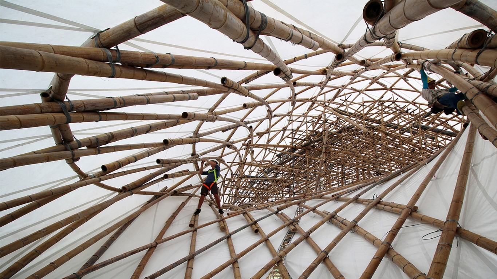

Hoy se está hablando mucho de bambú en el universo eco-friendly. Entre cepillos de dientes, utensilios domésticos e indumentaria fabricada con esta planta, la arquitectura pop-up también puede ofrecerle un espacio para brillar y posicionarse como potencial material mainstream de la construcción. En épocas en donde el cambio es perpetuo, las estructuras efímeras se encuentran con más demanda y eso requiere de un recurso abundante y de rápida reposición. El bambú puede ser un excelente aliado dentro de ese contexto, ya que es prácticamente un pasto que crece fácilmente, pero usarlo de manera rústica hacen de esta caña un elemento estructural de corta vida útil, lo cual le da mayor sentido a su elección para un uso de corta duración.
En la anatomía de la caña es donde está el puro poder creador. Neil Thomas, fundador y director de Atelier One, una de las oficinas más innovadoras en ingeniería de la UK, en los últimos seis años se involucró en el diseño y desarrollo de estructuras en bambú. Leo muchos artículos donde describen al bambú como el acero vegetal, pero Thomas no está tan de acuerdo. Durante su experiencia diseñando el escenario para la gira de U2 en fibra de carbono, el percibe al bambú como un material muy similar; fibras de carbono naturales. Entonces lo que él propone es “no imponer los códigos existentes al bambú, sino cambiar los códigos para que se encuadren con el bambú.” Esto significa, para qué usarlo en un simple pórtico, típico de la construcción convencional, cuando este material da libertad de diseño para generar estructuras complejas como las grid shells. Les voy a poner de ejemplo el ZCB pabellón de bambú en Hong Kong diseñado por la universidad China de Hong Kong, escuela de arquitectura. Fué creado para un evento público construido para el consejo de la industria de la construcción carbón zero. El diseño son básicamente tres torres hiperbólicas de doble curvatura que se pliegan entre sí creando un espacio de 350m2 para albergar a 200 personas. Para construirlo se usaron 474 cañas de bambú que se curvan in situ naturalmente y se conectaron atandolas a mano con alambre según la tradición cantonés con la que antiguamente en china suelen hacer los andamios de bambú. Lo extraordinario de este proyecto es cómo han maximizado las propiedades del material usando técnicas artesanales ancestrales. No necesitaron cortar al bambú para doblarlo, el mismo se fue curvando naturalmente y trabaja de forma activa dentro de la geometría grid shell.
A la cultura pop millennial le interesa el impacto social y ambiental, pero sobre todo lo que quiere es que detrás de toda acción exista un propósito trascendental. Si pensamos en bambú hay que entender el propósito para el cual la naturaleza lo creó. Vemos entonces que no solo se debe aprovechar su rápido crecimiento, sino también su potencial estructural para estructuras efímeras de grandes luces como por ejemplo escenarios de conciertos y festivales de música, centros comunitarios y pabellones, eventos al aire libre, arquitecturas informales como los glampings, etc. En estas temáticas y tipologías es donde personalmente creo que el bambú tiene posibilidad de expandirse y ser considerado uno de los materiales más adecuados para tales fines y los millennials van a disfrutar aún más ser parte de una arquitectura de huella de carbono negativa.